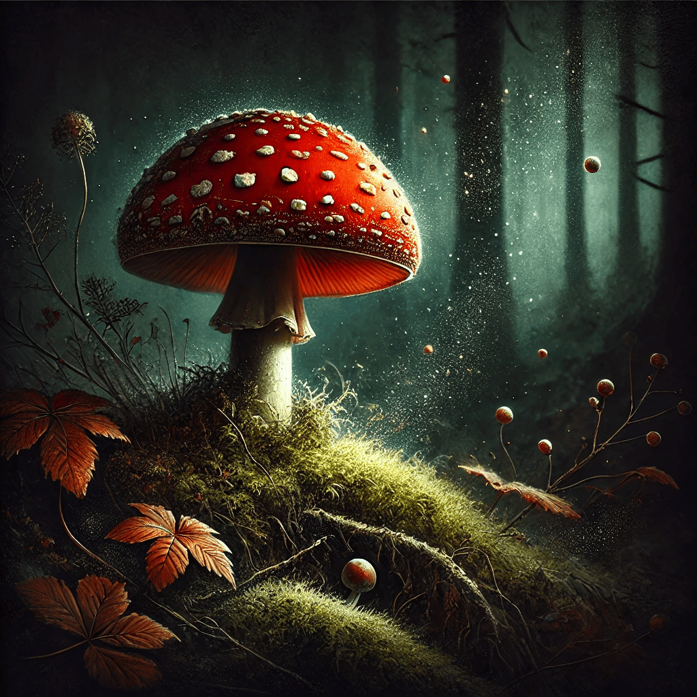

Amanita muscaria Jamur Berwarna Cerah dengan Ciri Khas
Amanita muscaria, atau yang sering disebut sebagai jamur fly agaric, adalah salah satu jamur yang paling dikenal di dunia. Dengan topi merah cerah yang dihiasi bintik-bintik putih, jamur ini sering muncul dalam gambar-gambar dongeng dan mitos. Namun, di balik penampilannya yang mencolok, Amanita muscaria memiliki sifat-sifat yang menarik dan penting untuk dipahami.
Jamur ini adalah anggota dari keluarga Amanitaceae dan dikenal karena efek psikoaktifnya yang kuat. Meskipun sering dianggap beracun, Amanita muscaria juga telah digunakan dalam berbagai tradisi budaya dan spiritual di seluruh dunia. Penting untuk membedakan fakta dari mitos dan memahami bagaimana jamur ini mempengaruhi ekosistem serta manusia.
Ciri-ciri dan Kegunaan Amanita muscaria
Amanita muscaria, atau yang sering disebut sebagai jamur fly agaric, adalah salah satu jamur yang paling dikenal di dunia. Dengan topi merah cerah yang dihiasi bintik-bintik putih, jamur ini sering muncul dalam gambar-gambar dongeng dan mitos. Namun, di balik penampilannya yang mencolok, Amanita muscaria memiliki sifat-sifat yang menarik dan penting untuk dipahami.
Jamur ini adalah anggota dari keluarga Amanitaceae dan dikenal karena efek psikoaktifnya yang kuat. Meskipun sering dianggap beracun, Amanita muscaria juga telah digunakan dalam berbagai tradisi budaya dan spiritual di seluruh dunia. Penting untuk membedakan fakta dari mitos dan memahami bagaimana jamur ini mempengaruhi ekosistem serta manusia.
Kesimpulan dan Pentingnya Pemahaman
Amanita muscaria adalah contoh jamur yang menonjol karena penampilannya yang khas dan efek yang dapat menimbulkan ketertarikan serta kekhawatiran. Memahami ciri-ciri, potensi kegunaan, serta risiko dari jamur ini adalah langkah penting dalam menghargai keanekaragaman hayati dan menghindari bahaya yang tidak diinginkan. Pengetahuan yang baik tentang jamur ini tidak hanya melindungi kita dari bahaya tetapi juga membuka wawasan tentang kekayaan budaya dan biologis yang ada di sekitar kita.
Komentar
Bagikan mood kalian
0 Respon
0
Benci
0
Buruk
0
Biasa
0
Bagus
0
Menarik

klo ngga mau mukannya kyk gw